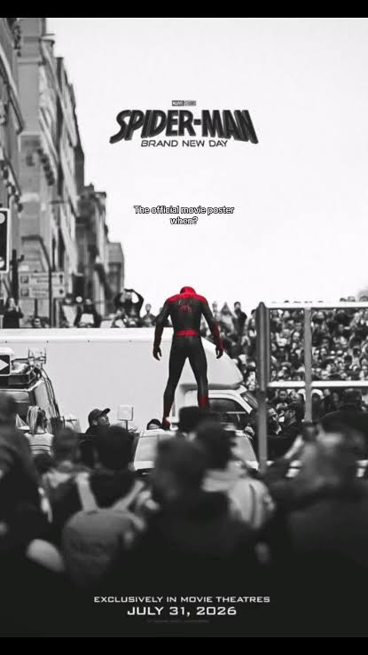
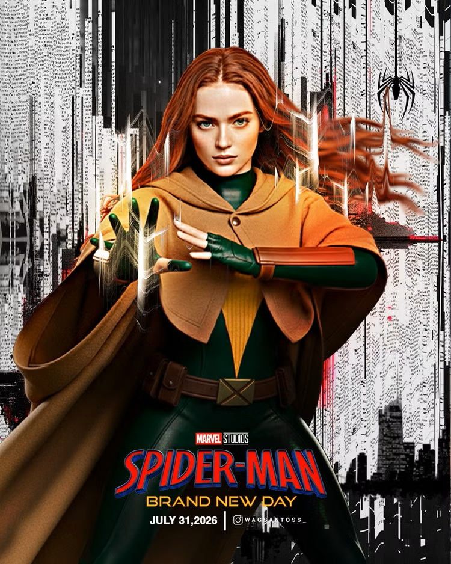
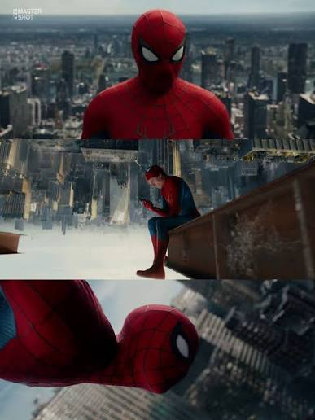

SPIDER-MAN: BRAND NEW DAY
LA REIVINDICACIÓN DEL ARÁCNIDO

Marvel reivindica a Spider-Man con 'Spider-Man: Brand New Day'. La cuarta entrega del arácnido en el Universo Cinematográfico de Marvel (MCU) por fin le otorga al personaje más importante de la editorial el lugar que merece. Esto llega después de una trilogía con altibajos donde el héroe reflejaba poco protagonismo, a pesar de estar presente desde los eventos de Civil War —historia donde posee una gran importancia en los cómics—. Esto se sumaba al constante manoseo y mal manejo que Sony le ha dado a su propio universo cinematográfico y, en su momento, al mismo personaje.
En esta entrega vemos a Spider-Man en todo su esplendor: extendido en gran parte de la ciudad, desde los aires hasta las calles, tomando el control de los enemigos cotidianos que azotan Nueva York. Si bien los villanos más icónicos de las viñetas aún no hacen su aparición triunfal, la película cumple al presentarnos a Jean Grey. Aunque no opera como una villana tradicional, funciona como una rival digna debido a sus motivaciones.
🎬 FICHA TÉCNICA
| RUBRO | DETALLE |
|---|---|
| DIRECTOR | Destin Daniel Cretton |
| FOTOGRAFÍA | Brett Pawlak |
| SPIDER-MAN | Tom Holland |
| JEAN GREY | Sadie Sink |
| FRANK CASTLE | Jon Bernthal |
| MJ / NED | Zendaya / Jacob Batalon |
🏆 Lo mejor: Sadie Sink como Jean Grey y la fotografía de Pawlak
🧬 X-MEN EN EL MCU: EL PUENTE MUTANTE
Marvel ya no sufre por limitaciones de derechos cinematográficos y era el momento ideal para introducir a los X-Men. Tras los sutiles cameos previos de Charles Xavier y Bestia, esta vez el puente mutante se consolida con un rol de verdadera importancia y mayor tiempo en pantalla. El gran temor de los fanáticos era que la presencia de múltiples héroes alrededor del trepamuros le robara el foco. Sin embargo, las intervenciones de Bruce Banner (Hulk), Frank Castle (Punisher) y Yelena Belova no afectaron en nada su peso en la trama; al contrario, aportaron un dinamismo muy necesario a la historia.

📸 FOTOGRAFÍA: BRETT PAWLAK
Quiero resaltar el sobresaliente trabajo de fotografía a cargo de Brett Pawlak. A diferencia de la trilogía anterior —criticada a veces por sus fondos digitales planos—, la Nueva York de Pawlak se siente real, táctil y viva. Además, el director de fotografía logra transmitir una sensación genuina muy vertiginosa de los rascacielos de Manhattan. Cada toma aérea y cada plano secuencia por las calles de la ciudad te sumergen en la experiencia de balancearse entre los edificios.

🎭 DIRECCIÓN: DESTIN DANIEL CRETTON
La apuesta de Marvel por el director Destin Daniel Cretton resultó un gran acierto. El cineasta logró darle una cara fresca a nuestro amigable vecino. Aunque la película maneja muchas subtramas en paralelo y algunas no logran cerrarse por completo, el guion se concentra con éxito en lo más importante: la madurez del personaje y su consolidación dentro del MCU.
Una de las intrigas más grandes era cómo se resolvería la relación de Peter con MJ y Ned tras los eventos pasados. El tormento del protagonista por volver a sus vidas está muy bien conducido mediante una narrativa realista. Habría sido fácil solucionar el conflicto de la amnesia colectiva a través del beso que MJ le da a Peter mientras es manipulada por Jean Grey, pero la película optó por un camino más maduro. Con una vida ya armada en los últimos años, era difícil que MJ lo recordara todo de golpe, dejando el terreno preparado para ver cómo concluye esta trama en el futuro.
🎬 REPARTO
Tom Holland entrega su actuación más madura y matizada hasta la fecha, logrando transmitir con éxito el desgaste físico, la soledad y el peso moral de un Peter Parker universitario que ha tenido que reconstruirse desde cero. A su lado, el esperado debut de Sadie Sink como Jean Grey se convierte en uno de los puntos más altos del filme. Sink dota a la mutante de una intensidad magnética y motivaciones complejas, alejándola del cliché de la villana unidimensional para transformarla en una fuerza de la naturaleza fascinante.
Por otro lado, los personajes secundarios y los invitados especiales enriquecen la dinámica urbana de la historia. El regreso de Jon Bernthal como Frank Castle (Punisher) aporta una brutalidad tosca que contrasta a la perfección con la brújula moral del trepamuros, regalándonos una química impecable en pantalla. Finalmente, a pesar de la distancia narrativa impuesta por el hechizo de amnesia, Zendaya (MJ) y Jacob Batalon (Ned) logran que cada una de sus breves apariciones se sienta cargada de una profunda nostalgia, sirviendo como el pilar emocional que justifica el tormento interno de nuestro héroe.
📝 CRÍTICAS Y BALANCE
Han surgido críticas negativas que reclaman la falta de exploración en la vida civil de Peter Parker. A mi parecer, esto es algo que las cintas anteriores ya habían explotado en demasía, descuidando al héroe. Esta película balancea las cosas y seguramente la próxima entrega responderá a las dudas sobre su vida personal.
Y los fans agradecemos mucho también las portadas que adaptaron en la película. Un detalle que conecta directamente con el corazón de los lectores de cómics de toda la vida.
La evolución cinematográfica que el héroe de Marvel necesitaba.
Dirección sólida, fotografía espectacular y el respeto que el personaje merece.